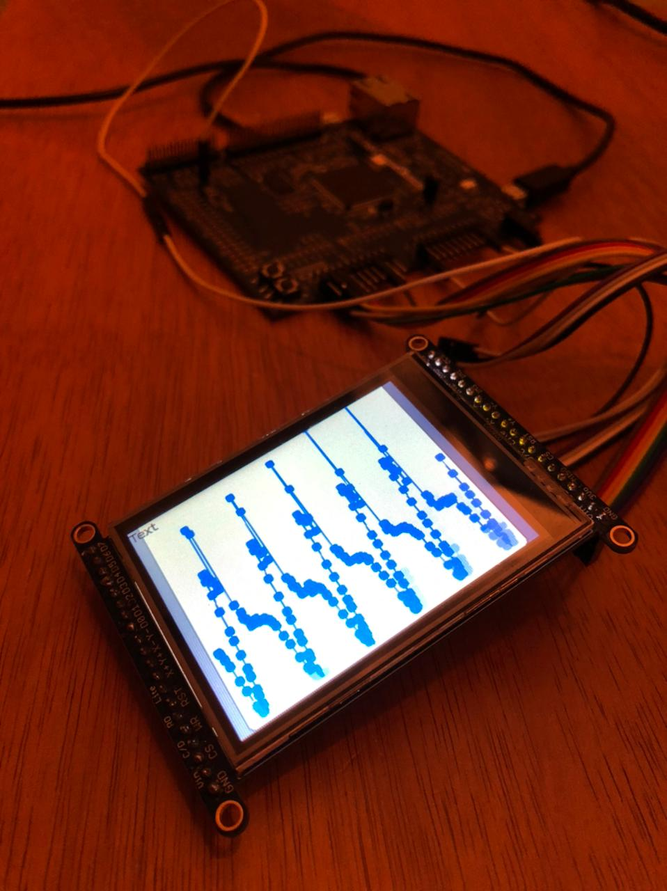
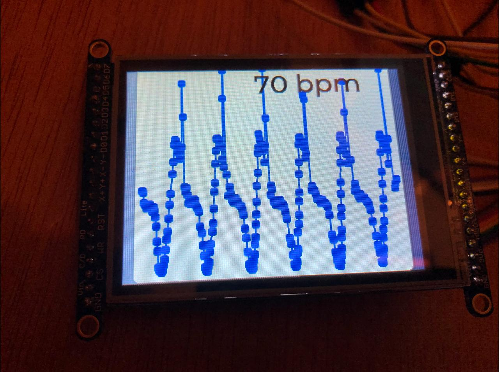

LAB - ECG
Neste laboratório iremos processar e exibir o sinal de um electrocardiograma (ECG).
Lab
| Exemplo base | LAB | |
|---|---|---|
SAME70-Examples/Demos/ECG |
 |
Lab8-RTOS-ECG |
Código exemplo
- Vamos modificar o código exemplo SAME70-examples/Demos/ECG/, faça uma cópia para o seu repositório de laboratórios renomeando para
Labs8-RTOS-ECG.
Periféricos utilizados no lab
Por vocês:
- AFEC1 (EXT1 PC31), canal 6
- TC1 canal 1
- RTT
Indiretamente (o projeto já usa para gerar o ECG):
- DAC0 (PB13)
- TC0 canal 0
Conectando
Info
Você deve ter o LCD conectado na placa.
Vamos conectar o pino PB13 que gera o sinal o sinal analógico do batimento cardíaco ao pino PC31 do EXT1 que possui o AFEC1 conforme imagem e diagrama a baixo:

┌───────────────────┐
│ ┌─────┐ │
│ │afec │◄├────┐
│ └─────┘ │ │
│ │ │ ecg
│ ┌─────┐ ┌─────┐ │ │
│ │ tc0 ├─►│dac ├─x────┘
│ └─────┘ └─────┘ │ PB13
└───────────────────┘
ECG
O sinal ECG gerado no pino PB13 possui a forma de onda a seguir:

E se analisarmos o espectro do sinal via transformada de fourier, obtemos a seguinte composição espectral:

Question
O que você consegue extrair de informações dos gráficos anteriores?
No primeiro (ecg no tempo) podemos ver claramente que existe uma alta frequência no sinal, mas que o envelope é a informação do ecg.
Já no fourier somos capazes se distinguir que existem duas regiões com bastante informações, uma de baixa frquência (0..25)Hz e outra de 60Hz.

60 Hz
Notamos claramente que existe um sinal centrada em 60Hz, isso é muito comum quando trabalhamos com eletrônica e reflete o 60Hz da rede elétrica que é propagada de diversas formas para o transdutor responsável em amostrar o dado do pulso elétrico do corpo humano, causando um ruído no sinal não desejável.
Para tararmos o dado corretamente teremos que filtra o ruído. Lembre que em alguns países a frequência da rede elétrica é de 50Hz e não de 60Hz como no Brasil.
Info
O som desse ruído em 60hz é chamado de Zumbido elétrico soa como:
Task process
Vamos criar uma tarefa no RTOS que será responsável por processar os dados do ECG, iremos chamar a tarefa de task_process. Essa tarefa irá receber os dados da conversão analógica, processar e extrair informações e retornar enviar os dados para a task_main.
Tarefa: task_process
- Crie uma tarefa chamada de
task_process, ela pode estar vazia por hora. Não esqueça do while(1) e de criar ela na função main (xTaskCreate).
Leitura analógica
Para começarmos precisamos ler o valor do ECG que está sendo gerado no pino PB13, para isso iremos configurar a leitura analógica no AFEC1 canal 6. A leitura anlógica deve ser executada a 250 Hz, para garantirmos que estaremos lendo a uma taxa de amostragem fixa, vamos configurar um TC para fazer a conversão do sinal. O valor convertido deve ser colocado em uma fila para processamento futuro, como indicado a seguir:

Info
Taxa de amostragem fixa simplifica muito o processamento de sinais digitais, muitas técnicas assumem que o valor é constante.
A forma como fizemos no laboratório do AFEC não é boa aqui, porque lá usávamos uma tarefa do RTOS para gerar a taxa de amostragem (vtaskDelay) e isso não garante que tenhamos uma taxa fixa, pois não é garantido que a tarefá vá executar exatamente no delay proposto (outras taréfas de prioridade superior podem estar executando).
Além disso, o uso de uma task para gerar a taxa de amostragem limita a taxa que podemos usar, o RTOS executa no máximo a 1000Hz.
Question
Qual handler é referente ao TC1 canal 0?
-
TC6_Handler -
TC1_Handler -
TC3_Handler
Tarefa: Lendo dados
No começo da task_process:
- Criar uma fila de inteiros
xQueueECGde tamanho 250 - Configurar TC1 canal 0 para gerar uma interrupção a cada 250Hz
- Configurar leitura no AFEC 1 canal 6
Handlers/Callbacks:
- No TC3_Handler inicializar a conversão do AFEC1 canal 6
- Isso vai fazer que com que tenhamos 250 amostras por segundo do ECG.
- No callback do AFEC ler o dado e colocar na fila
xQueueECG
Dentro do while da task_process:
- Ler o dado da fila
xQueueECGe imprimir no terminal.
Validar:
- Executar o programar, abrir o terminal e obter dados que variam no tempo (entre 0 e 3000).
Retransmitindo o dado
Uma boa prática é atualizar o LCD apenas em uma tarefa, o LVGL não é thread-safe by default, como o site indica na página página:
Isso significa que não podemos chamar uma função do LVGL enquanto a anterior não tenha terminado de executar, e caso implementemos o acesso ao LCD em várias partes do nosso programa corremos grande risco disso acontecer (lembrem que o RTOS interrompe uma tarefa para permitir que outra execute, e isso pode ser no meio da função por exemplo de mudar o valor do label).
Info
O site indica o uso de mutex para solucionar este problema, vocês terão isso em Sistemas Hw Sw.
Para não termos que usar mutex, vamos atualizar o LCD apenas em uma das tasks, eu sugiro fazermos isso na task_main.
Por conta disso iremos retransmitir o dado da fila do ECG para a task_main por outra fila: xQueueEcgInfo que será do uma struct contendo dois inteiros: ecg e bpm.
A ideia aqui é que a task_process irá pegar os dados do ECG, processar e extrair o valor da frequência cardiaca (em batimentos por minuto) e retransmitir para a task_main exibir no LCD.

Tarefa: Retransmitindo
Vamos restransmitir o dado do ecg da task_process para a task_main.
task_process:
- Cirei uma struct
ecgInfocom dois parâmetros inteiros: ecg, bpm. - Crie uma fila
xQueueEcgInfocapaz de armazenar até 32 valores doecgInfo- Dica: Sugerirmos criar na função main, antes de iniciarem as tasks.
- Faça o envio do dado do Ecg da
task_processpara atask_main, coloque qualquer valor no bpm.
task_main:
- Faça a leitura da fila
xQueueEcgInfo - Altere o printf da
task_processparatask_mainpara validar a transmissão dos dados.
Warning
Cuidado para não usar funções que terminam com FromISR quando estiver interagindo com o RTOS de dentro de tarefas.
Exibindo gráfico
Agora que já temos o caminho do dado pronto vamos exibir no LCD usando o widget lv_chart. O site explica vários modos de fazer isso, eu irei sugerir um que fiz e funcionou bem.
Primeiro teremos que criar um vetor global (int ser1_data[250]) que irá armazenar os pontos do gráfico, o vetor precisa ter o tamanho da quantidade de pontos que queremos exibir. Vamos começar com 250, depois vocês podem ajustar até encontrarem um valor adequado.
Depois precisamos criar o ponteiro para o gráfico (lv_obj_t * chart;) e para a série do (ser1) também global (assim como fazermos para os labels e botões). E então inicializar o gráfico. Aqui eu irei fazer na função lv_screen_chart que deve ser chamada no começo da task_LCD, como demonstrado a seguir:
Tarefa: chart
Insira o código a seguir (variáveis globais e função):
// globais
#define CHAR_DATA_LEN 250
int ser1_data[CHAR_DATA_LEN];
lv_obj_t * chart;
lv_chart_series_t * ser1;
// Desenha gráfico no LCD
void lv_screen_chart(void) {
chart = lv_chart_create(lv_scr_act(), NULL);
lv_obj_set_size(chart, 300, 250);
lv_obj_align(chart, NULL, LV_ALIGN_IN_BOTTOM_MID, 0, 0);
lv_chart_set_type(chart, LV_CHART_TYPE_LINE);
lv_chart_set_range(chart, 0, 4095);
lv_chart_set_point_count(chart, CHAR_DATA_LEN);
lv_chart_set_div_line_count(chart, 0, 0);
lv_chart_set_update_mode(chart, LV_CHART_UPDATE_MODE_SHIFT);
ser1 = lv_chart_add_series(chart, LV_COLOR_BLUE);
lv_chart_set_ext_array(chart, ser1, ser1_data, CHAR_DATA_LEN);
lv_obj_set_style_local_line_width(chart, LV_CHART_PART_SERIES, LV_STATE_DEFAULT, 1);
}
Faça as modificações como indicado a seguir:
static void task_lcd(void *pvParameters) {
+ lv_screen_chart();
for (;;) {
lv_tick_inc(50);
lv_task_handler();
vTaskDelay(50);
}
}
Agora temos que modificar a função task_main para toda hora que receber um novo valor na fila xQueueEcgInfo ela atualizar o gráfico. Para isso iremos usar a função lv_chart_set_next(chart, ser1, value), após termos atualizado a série precisamos indicar ao LVGL que é para atualizar o gráfico, isso é feito pela função lv_chart_refresh(chart).
- Mais informções na página do widget: https://docs.lvgl.io/latest/en/html/widgets/chart.html#overview
Com isso vocês devem obter algo como:

Tarefa: Exibindo
Agora modifique o firmware para atualizar o dado da série e exibir o dado toda vez que receber um dado novo na fila xQueueEcgInfo. Para isso vão precisar usar as duas funções a seguir:
// novo valor |
// v
lv_chart_set_next(chart, ser1, value);
lv_chart_refresh(chart);
- Programe e teste na placa
Tip
Dica do Carlos Dip.
Para tirar os pontos do gráfico execute: lv_obj_set_style_local_size(chart, LV_CHART_PART_SERIES, LV_STATE_DEFAULT, LV_DPI/150);
Frequência cardiaca
Agora vamos modificar a task_process para detectar a frequência cardiaca, na literatura existem várias maneiras (bem mais correta da qual eu irei propor) o artigo a seguir explora algumas das maneiras:
A ideia principal é detectar o intervalo de tempo entre cada pico:
A implementação que iremos fazer aqui envolve aplicar um threshold no valor e esperar até o próximo pico, calculando o tempo entre os dois sinais.

Question
No exemplo anterior qual o valor da frequência cardiaca em batimento por minuto?
- 80
- 0.75
- 75
A conta a ser feita é
- Econtra dT = 0.75s
- Do dT calcula a frequência em Hz -> 1/dT: 1.33
- Hz = 1/s, multiplica por 60 para encontrar a frequência em minuto: 1.33*60 = 80 bpm
RTT
Para calcularmos o dT iremos usar o periférico RTT, que ficará gerando pulsos e depois iremos verificar quantos pulsos aconteceram no intervalo entre um pico e outro e então estimar o valor do dT. O RTT será configurado para operar a uma taxa de 1000Hz, ou seja, 1000 pulsos por segundo, isso nos dará uma boa resolução.
Neste caso não iremos usar a interrupção do RTT de alarme, mas sim a de tempo (que vai ocorrer 1000x por segundo). Sempre que ela ocorrer, iremos incrementar um contador global que será nosso dT. Esse contador será zerado a cada pulso.
Tarefa: Inicialize o RTT
O RTT deve ser inicializado na task_process.
- Crie uma variável global g_dT
- Inicialize o RTT para operar a 1000Hz
- não vamos usar o alarme, coloque qualquer valor.
- A cada interrupção de tick do RTT, incremente a variável
g_dT
Threshold
Iremos aplicar o threshold e procurar por valores que nos ajudem a encontra o pico, isso será feito sempre que um novo dado chegar na fila xQueueEcg.
Tarefa: threshold
Para cada dado recebido na fila do ecg aplique o threshold e imprima o valor encontrado e seu dT, lembre de zerar o dT.
Sugerimos aplicar 3280 como threshold.
Exemplo
if (xQueueReceive( xQueueAdc, &adc, 50 )) {
// ...
// ...
if (adc > 3280 ){
printf("%d: %d ms\n", adc, g_dT);
// começamos a contar novamente
g_dT = 0;
}
}
Melhorando
A implementação anterior não funciona muito bem, as vezes encontramos mais de um valor no mesmo pico dentro do range estipulado:

Melhorando
Faça alguma mágica para desconsiderar mais de um ponto no mesmo pico.
- Lembre de validar com os dados no terminal, seus dT devem ser no mínimo maior que 20 ms.
Tip
Para valorizar os picos do sinal vocês poderiam usar a energia dele (E(t) = ecg(t)^2), a energia de um sinal valoriza seus picos.
Se for usar energia lembre de ajustar o valor do threshold.
Calculando bpm
Agora com o dT correto conseguimos converter a informação para bpm.
Tarefa: bpm
Calcule o bpm do ecg e imprima no terminal. Verifique se está dentro do range válido.
- O valor deve variar ligeramente no tempo e ficar entre 60 bpm e 80.
Exibindo
Agora que temos o valor do bpm, vamos enviar essa informação junto com o ecg para a task_main via a fila xQueueEcgInfo (lembra que criamos uma struct?). Com a informação na tarefa que atualiza o LCD, conseguimos criar um label e exibir o valor na tela junto com o gráfico.
O resultado esperado é algo como:

Tarefa: Exibindo
Execute:
- Envie o dado do bpm para a task_main via a fila
- Crie um label novo para exibir a informação
- A cada novo dado na fila atualize o valor do label.
Tip
Caso queira que o valor da frequência mude com maior periodicidade, altera o define ECG_CHANGE_TIME que está no arquivo aps2/aps2.h, este define especifica (em ms) a cada quanto tempo o valor do delay entre um pulso e outro será atualizado.
Sugestão de valor: 1000 (1 segundo)
Info
Até aqui é C.
Preencher ao finalizar o lab
B/A
- Adicionar beep com o buzzer, conforme frequência.
- Procurar pico usando a energia do sinal do sinal no lugar do valor no tempo.
Info
O que mais poderiamos fazer?
- Filtrar o sinal
- Fazer o threshold ser dinâmico (o valor que detecta pico)
- Deixar gráfico mais bonito